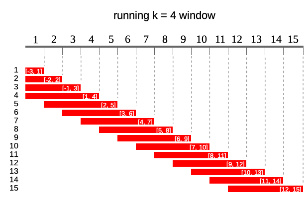

Apply any R function on rolling windows
Dawid Kałędkowski
2021-01-31
Source:vignettes/apply_any_r_function.Rmd
apply_any_r_function.RmdUsing runner
runner package provides functions applied on running windows. The most universal function is runner::runner which gives user possibility to apply any R function f on running windows. Running windows are defined for each data window size k, lag with respect to their indexes. Unlike other available R packages, runner supports any input and output type and also gives full control to manipulate window size and lag/lead.
There are different kinds of running windows and all of them are implemented in runner.
Cumulative windows
The simplest window type which is similar to base::cumsum. At each element window is defined by all elements appearing before current.

In runner this can be achieved as simple by:
Constant sliding windows
Second type of windows are these commonly known as running/rolling/moving/sliding windows. This types of windows moves along the index instead of cumulating like a previous one.
Following diagram illustrates running windows of length k = 4. Each of 15 windows contains 4 elements (except first three).

To obtain constant sliding windows one just needs to specify k argument
# summarizing - sum of 4-elements
runner(
1:15,
k = 4,
f = sum
)
# summarizing - slope from lm
df <- data.frame(
a = 1:15,
b = 3 * 1:15 + rnorm(15)
)
runner(
x = df,
k = 5,
f = function(x) {
model <- lm(b ~ a, data = x)
coefficients(model)["a"]
}
)Windows depending on date
By default runner calculates on assumption that index increments by one, but sometimes data points in dataset are not equally spaced (missing weekends, holidays, other missings) and thus window size should vary to keep expected time frame. If one specifies idx argument, than running functions are applied on windows depending on date rather on a sequence 1-n. idx should be the same length as x and should be of type Date, POSIXt or integer. Example below illustrates window of size k = 5 lagged by lag = 1. Note that one can specify also k = "5 days" and lag = "day" as in seq.POSIXt.
In the example below in square brackets ranges for each window.

idx <- c(4, 6, 7, 13, 17, 18, 18, 21, 27, 31, 37, 42, 44, 47, 48)
# summarize - mean
runner::runner(
x = idx,
k = 5, # 5-days window
lag = 1,
idx = idx,
f = function(x) mean(x)
)
# use Date or datetime sequences
runner::runner(
x = idx,
k = "5 days", # 5-days window
lag = 1,
idx = Sys.Date() + idx,
f = function(x) mean(x)
)
# obtain window from above illustration
runner::runner(
x = idx,
k = "5 days",
lag = 1,
idx = Sys.Date() + idx
)running at
Runner by default returns vector of the same size as x unless one puts any-size vector to at argument. Each element of at is an index on which runner calculates function. Example below illustrates output of runner for at = c(13, 27, 45, 31) which gives windows in ranges enclosed in square brackets. Range for at = 27 is [22, 26] which is not available in current indices.
idx <- c(4, 6, 7, 13, 17, 18, 18, 21, 27, 31, 37, 42, 44, 47, 48)
# summary
runner::runner(
x = 1:15,
k = 5,
lag = 1,
idx = idx,
at = c(18, 27, 48, 31),
f = mean
)
# full window
runner::runner(
x = idx,
k = 5,
lag = 1,
idx = idx,
at = c(18, 27, 48, 31)
)at can also be specified as interval of the output defined by time interval which results in obtaining results on following indices seq(min(idx), max(idx), by = "<time interval>"). Interval can be set in the same way as in seq.POSIXt function. It’s worth noting that at interval shouldn’t be more frequent than interval of idx - for Date the most frequent interval is a "day", for POSIXt it’s a "sec".
idx_date <- seq(Sys.Date(), Sys.Date() + 365, by = "1 month")
# change interval to 4-months
runner(
x = 0:12,
idx = idx_date,
at = "4 months"
)
# calculate correlation at every 6-months
runner(
x = data.frame(
a = 1:13,
b = 1:13 + rnorm(13, sd = 5),
idx_date
),
idx = "idx_date",
at = "6 months",
f = function(x) {
cor(x$a, x$b)
}
)Move and stretch window in time
One can stretch window length by k and shift in time (or index) using lag. Both arguments can be integer and also time interval like for example 2 months. If k or lag are a single value then window size/lag are constant for all elements of x. User can also specify k/lag as vector, then size and lag will vary for each window. Both k and lag can be of length(.) == 1, length(.) == length(x) or length(.) == length(at) (if at is specified). lag can be negative and positive while k only non-negative.
# summarizing - concatenating
runner::runner(
x = 1:10,
lag = c(-1, 2, -1, -2, 0, 0, 5, -5, -2, -3),
k = c(0, 1, 1, 1, 1, 5, 5, 5, 5, 5),
f = paste,
collapse = ","
)
# full window
runner::runner(
x = 1:10,
lag = 1,
k = c(1, 1, 1, 1, 1, 5, 5, 5, 5, 5)
)
# on dates
idx <- c(4, 6, 7, 13, 17, 18, 18, 21, 27, 31, 37, 42, 44, 47, 48)
runner::runner(
x = 1:15,
lag = sample(c("-2 days", "-1 days", "1 days", "2 days"),
size = 15,
replace = TRUE),
k = sample(c("5 days", "10 days", "15 days"),
size = 15,
replace = TRUE),
idx = Sys.Date() + idx,
f = function(x) mean(x)
)
NA padding
Using runner one can also specify na_pad = TRUE which would return NA for any window which is partially out of range - meaning that there is no sufficient number of observations to fill the window. By default na_pad = FALSE, which means that incomplete windows are calculated anyway. na_pad is applied on normal cumulative windows and on windows depending on date. In example below two windows exceed range given by idx so for these windows are empty for na_pad = TRUE. If used sets na_pad = FALSE first window will be empty (no single element within [-2, 3]) and last window will return elements within matching idx.

Using runner with data.frame
User can also put data.frame into x argument and apply functions which involve multiple columns. In example below we calculate beta parameter of lm model on 1, 2, …, n observations respectively. On the plot one can observe how lm parameter adapt with increasing number of observation.
x <- cumsum(rnorm(40))
y <- 3 * x + rnorm(40)
date <- Sys.Date() + cumsum(sample(1:3, 40, replace = TRUE)) # unequaly spaced time series
group <- rep(c("a", "b"), 20)
df <- data.frame(date, group, y, x)
slope <- runner(
df,
function(x) {
coefficients(lm(y ~ x, data = x))[2]
}
)
plot(slope)One can also use runner with dplyr also with problematic group_by operations, without need to apply group_modify. Below we apply grouped 20-days beta, by specifying window length k = "10 days" and providing column name where indices (dates) are kept.
library(dplyr)
summ <- df %>%
group_by(group) %>%
mutate(
cumulative_mse = runner(
x = .,
k = "20 days",
idx = "date", # specify column name instead df$date
f = function(x) {
coefficients(lm(y ~ x, data = x))[2]
}
)
)
library(ggplot2)
summ %>%
ggplot(aes(x = date, y = cumulative_mse, group = group, color = group)) +
geom_line()When user executes multiple runner calls in dplyr mutate, one can also use run_by function to prespecify arguments in tidyverse pipeline. In the example below runner functions are applied on k = "20 days" calculated on "date" column.
df %>%
group_by(group) %>%
run_by(idx = "date", k = "20 days", na_pad = FALSE) %>%
mutate(
cumulative_mse = runner(
x = .,
f = function(x) {
mean((residuals(lm(y ~ x, data = x))) ^ 2)
}
),
intercept = runner(
x = .,
f = function(x) {
coefficients(lm(y ~ x, data = x))[1]
}
),
slope = runner(
x = .,
f = function(x) {
coefficients(lm(y ~ x, data = x))[2]
}
)
)Parallel mode
The runner function can also compute windows in parallel mode. The function doesn’t initialize the parallel cluster automatically but one have to do this outside and pass it to the runner through cl argument.
library(parallel)
numCores <- detectCores()
cl <- makeForkCluster(numCores)
runner(
x = df,
k = 10,
idx = "date",
f = function(x) sum(x$x),
cl = cl
)
stopCluster(cl)Executing runner in parallel mode isn’t always faster than a single thread. Multiple-thread computation generates some overhead due to managing the nodes. In general, complex functions which bases on processor (e.g. loops) used to be quicker in parallel mode but one should assess itself which option has the edge in specific situation.